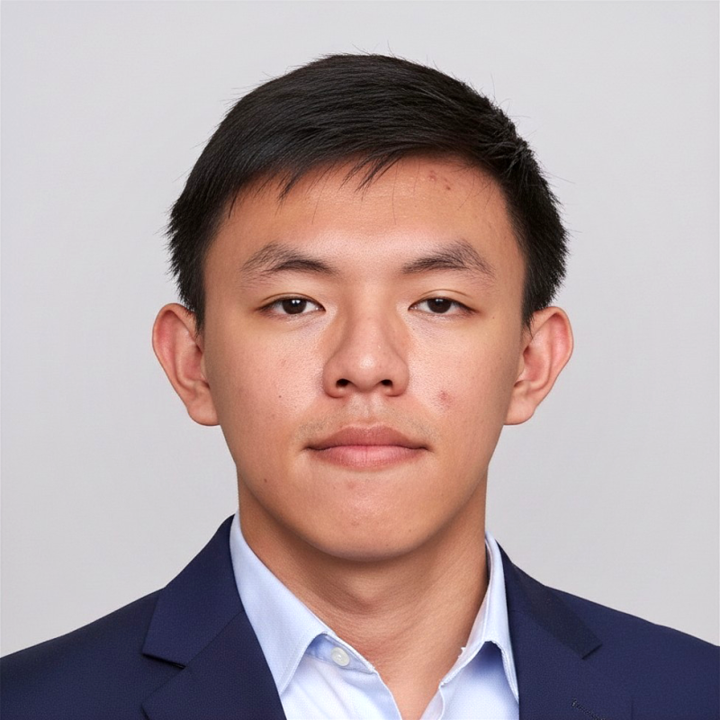
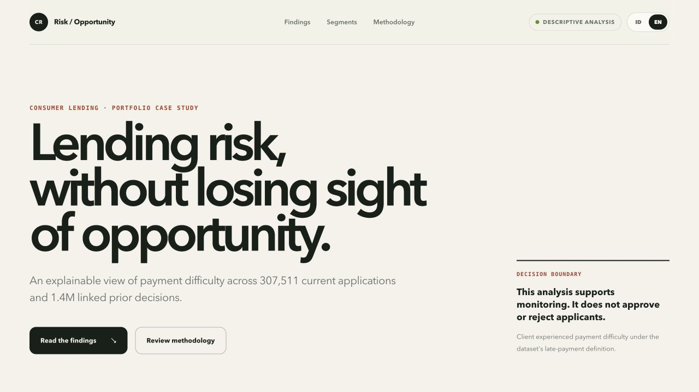

TNEX
Kota Damansara, Selangor, Malaysia
Remote ·
1 year
Final-year Mathematics student and full-stack developer who turns analytical thinking into practical digital products across software, data, and responsible artificial intelligence.
I work across the full product cycle, from understanding a problem and structuring its logic to building interfaces, APIs, integrations, and reliable workflows. My mathematics background also shapes how I communicate complex ideas clearly in engineering collaboration and education.

Experience spanning production software, AI-powered workflows, mathematics education, and clear technical communication.
Kota Damansara, Selangor, Malaysia
Remote ·
1 year
Depok, West Java, Indonesia
Hybrid
Depok, West Java, Indonesia
Hybrid
Depok, West Java, Indonesia
On-site
Formal study in mathematical reasoning, abstraction, quantitative analysis, and structured problem solving.
Universitas Indonesia · Faculty of Mathematics and Natural Sciences
Portfolio work grounded in real repositories, with clear technical scope and responsible data practices.

Explainable lending portfolio analytics with validated data contracts, statistical safeguards, and ethical limitations.